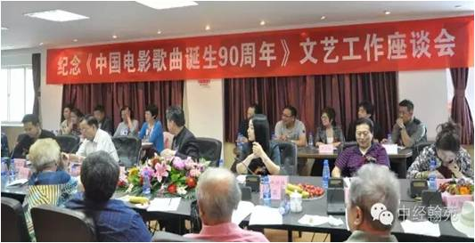

2016年5月18日下午，由中国影视歌曲歌手大赛组委会、中国影视歌曲全民大联欢组委会主办的“纪念《中国电影歌曲诞生90周年》文艺工作者座谈会”在《经济》杂志社隆重举行。谢芳、张目、张连文、赵尔康、刘为光等老一辈艺术家，中国电影评论学会会长章柏青、中国电影音乐学会秘书长朱天纬、《经济》杂志社社长陈志强、《华讯网》主编李慧芳、中央电视台导演李楠、全国总工会著名作曲家何国强、中国影视歌曲歌手大赛组委会、中国影视歌曲全民大联欢组委会主席姜国顺、执行主席高洁等组委会主要成员以及诸多媒体记者出席了该座谈会。
座谈会上，组委会主席姜国顺首先做了重要发言。姜主席说：“中国影视歌曲歌手大赛、中国影视歌曲全民大联欢活动筹备一年来社会反响极好，地方赛区的很多参与者的积极热情态度让我们主办方非常感动，感谢各位领导、专家、艺术家以及品牌商对我们的大力支持，我们一定不负众望，把这次活动办好。我们积极响应习主席号召为弘扬中国传统文化，教育好下一代作出贡献。”
中国电影评论学会会长、组委会名誉主席章柏青在发言中说：“中国电影歌曲所走过的道路也是中国电影发展的道路，两者密切联系在一起。“中国影视歌曲歌手大赛”、“中国影视歌曲全民大联欢”活动面向社会以后，之所以能引起很大反响其原因有两点：一是中国影视歌曲所走过的90年历程是与整个中国社会前进的步伐联系在一起的，优秀的电影歌曲是我们国家从寻求解放到走向幸福生活的记录。我们现在举办此活动，是对正确的价值观的弘扬，是对党中央号召的积极响应。二是因为，很多影视歌曲不但旋律优美动听，更是对广大受众者乃至对整个社会的一种无形的教育。这种教育不是耳提面命式的说教，而是通过与听者产生共鸣以感动人的内心，给人们带来鼓励并进行正确引导，这次活动对整个社会能产生积极向上的正能量。”
中国电影音乐学会秘书长、组委会顾问委员朱天纬在发言中回顾了我国第一首电影歌曲《乳娘曲》诞生的历史，并充分肯定了此活动的重要意义。朱天纬说：“中国电影歌曲创作始于上世纪20年代中后期的无声电影时代。1926年，由中国明星影片公司拍摄出品的电影《良心的复活》中的插曲《乳娘曲》（包天笑作词，冯子和作曲）宣告了中国第一首电影歌曲的诞生，成为中国电影歌曲的开山之作。中国最早的电影歌曲诞生的时候在社会上引起了很高的反响，从此以后随着技术不断提高，电影歌曲也不断发展，像国歌《义勇军进行曲》、《四季歌》、《天涯歌女》等都是非常优秀的电影音乐作品，并且在我们中国电影史上也起到了非常重要的作用。新中国成立以来，涌现出了更多的优秀电影歌曲，像《我的祖国》、《共和国之恋》等歌曲不但在电影中提升了艺术效果，更是对弘扬民族精神有着非常重要的作用。很多电影歌曲不只在中国大陆地区流行，在港澳台地区，乃至在海外也很受欢迎。这个活动是一个‘金点子’，非常有意义，值得在社会上推广进行。”朱天纬同时就《经济》杂志社对此次活动的大力支持表示充分的肯定，她说：“《经济》杂志社作为中央媒体能对这样有意义的文化活动鼎力支持，并积极宣传此次活动，我作为一个专业的电影人认为，这是非常值得肯定和赞许的，我衷心的感谢《经济》杂志社为此活动作出的贡献。”朱天纬还将她精心写就的著作《中国电影百年经典歌曲》与歌曲集《中国电影百年寻音集》赠送给活动组委会，祝愿活动圆满成功。
中央电视台著名作曲家、组委会顾问刘为光在座谈会上说：“电影的诞生给广大群众带来了最为实惠、普及范围最广的艺术表现形式。由于有了电影便有了电影歌曲，电影歌曲借助电影这双翅膀，飞得很高很远，甚至可以离开电影，独自去闯荡江湖。电影歌曲的普及程度是任何艺术形式都很难与之相比的，它高可阳春白雪，低可下里巴人。我们国家影视歌曲的发展历程也在一定程度上反映了国家的历史、文化、人文的变化。”
著名表演艺术家、组委会艺术顾问谢芳、张目、张连文、赵尔康等老一辈艺术家也纷纷发言。张连文说：“有一些电影的画面我们可能已经忘记了，但是电影中的音乐却经久不衰地回荡在我们耳边，每当哼唱起来，都会让我们回忆起曾经的青春岁月。”赵尔康老师说：“在电影歌曲诞生90周年的时候，组织此项赛事活动，再次唱响那些记忆中的旋律，这是非常有意义的事情，是给中国人民做了一件大好事。”谢芳和张目两位老师表示：十分感谢组委会举办中国影视歌曲歌手大赛、中国影视歌曲全民大联欢活动，并真心祝福活动取得圆满成绩。
《经济》杂志社社长陈志强在致辞中说：“今天很荣幸见到了这么多德高望重的老艺术家，我代表《经济》杂志社对各位艺术家的到来表示热烈的欢迎和衷心的感谢！此活动能够得到这么多老艺术家的支持，这给我们带来了巨大的鼓舞和力量，同时也让我们认识到自身的责任重大。我们绝不辜负各位老艺术家的期待，有信心也有责任把这样富有意义的文化活动在全国范围内红红火火地办起来。在宣传方面我们《经济》杂志社责无旁贷，定会尽全力为活动进行全方位多角度的报道。在活动组织的各个环节上，我们也会积极配合、全力以赴！我们希望通过此次活动，能让老艺术家们再展峥嵘岁月风采，并甄选出德艺双馨的歌唱新秀，为国家影视文化、声乐文化事业的发展，为百姓生活的幸福、快乐作出贡献，为“中国梦”的文化篇章再添华彩！”
《经济》杂志社中经翰苑（北京）文化艺术发展有限公司总经理赵琬姝在讲话中说：“本次活动不仅是弘扬文化艺术和人文精神的重要活动，也是提升社会主义精神文明建设工作上的有力举措，更是推动经济发展、社会繁荣和各项事业健康发展的源泉和动力。我们《经济》杂志社一定积极配合主办方及各有关单位的工作，推动各赛区的建设，并在宣传方面充分发挥作为媒体的自身优势，为此次活动提供大力支持。”
中国电影家协会党组副书记、组委会名誉主席许柏林；著名歌唱家、组委会名誉主席邓玉华因事未能到场，在座谈会进行中通过电话向组委会表示祝贺，并向在场的全体嘉宾表示亲切问候。其他与会嘉宾也做了积极发言。座谈会现场，老艺术家们与在场的来自全国各地赛区的许多中青年文艺工作者亲切交流、热烈讨论，共同回顾中国电影歌曲走过的近百年历史，畅想中国电影的美好未来，谢芳和张目两位老师合唱的一曲《九九艳阳天》把整场座谈会推向了高潮，座谈会在一片欢声笑语中落下帷幕。
组委会主席 姜国顺
组委会执行主席 高 洁
中国电影评论学会会长 组委会名誉主席 章柏青
中国电影音乐学会秘书长 组委会顾问委员 朱天纬
中央电视台著名作曲家 组委会顾问 刘为光
国家一级演员 著名表演艺术家 组委会顾问委员 谢芳
国家一级演员 著名表演艺术家 组委会顾问委员 张目
国家一级演员 著名表演艺术家 组委会顾问委员 张连文
国家一级演员 著名表演艺术家 组委会顾问委员 赵尔康
《经济》杂志社社长 陈志强
《华讯网》主编 李慧芳
全国总工会著名作曲家 大赛音乐总监 何国强
中央电视台导演 大赛导演 李楠
《经济》杂志社中经翰苑（北京）文化艺术发展有限公司总经理 赵琬姝
